Function
Systems Architecture · Chapter 5
From Form to Function
- Chapter 4 analyzed form — what a system is
- This chapter analyzes function — what a system does
- Function is the more abstract, dynamic attribute — harder to pin down than form, but it’s the reason systems exist at all
Architecture maps function to form
Once we can analyze both form and function, Chapter 6 shows how they combine into system architecture.
Box 5.1–5.3 · Definitions
Function is the action for which a system exists.
An operand is an object that need not exist prior to the execution of function, and is in some way acted upon by the function.
A process is the application of an instrument of form on an operand, changing it in some way — creating, destroying, or affecting it.
Function = process + operand. A process needs an instrument (form) to execute it.
Figure 5.1 · Function Is Hard to Draw
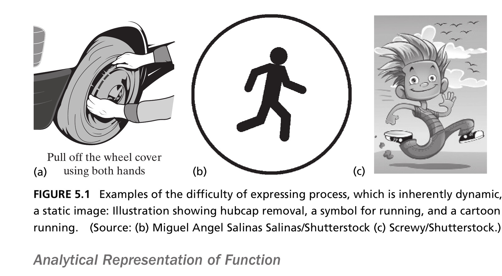
Process is inherently dynamic — a static image always struggles to capture it. Source: Crawley, Cameron & Selva (2016), Fig. 5.1. Photo (b) Miguel Angel Salinas Salinas/Shutterstock, (c) Screwy/Shutterstock.
OPM Notation for Process and Operand
Three ways a process and operand can relate in OPM:
Affect
(double arrow)
The process changes an attribute of the operand, but doesn’t create or destroy it.
Consume
(arrow into process)
The operand no longer exists in its original form after the process.
Produce
(arrow out of process)
The operand didn’t exist before the process, and does after.
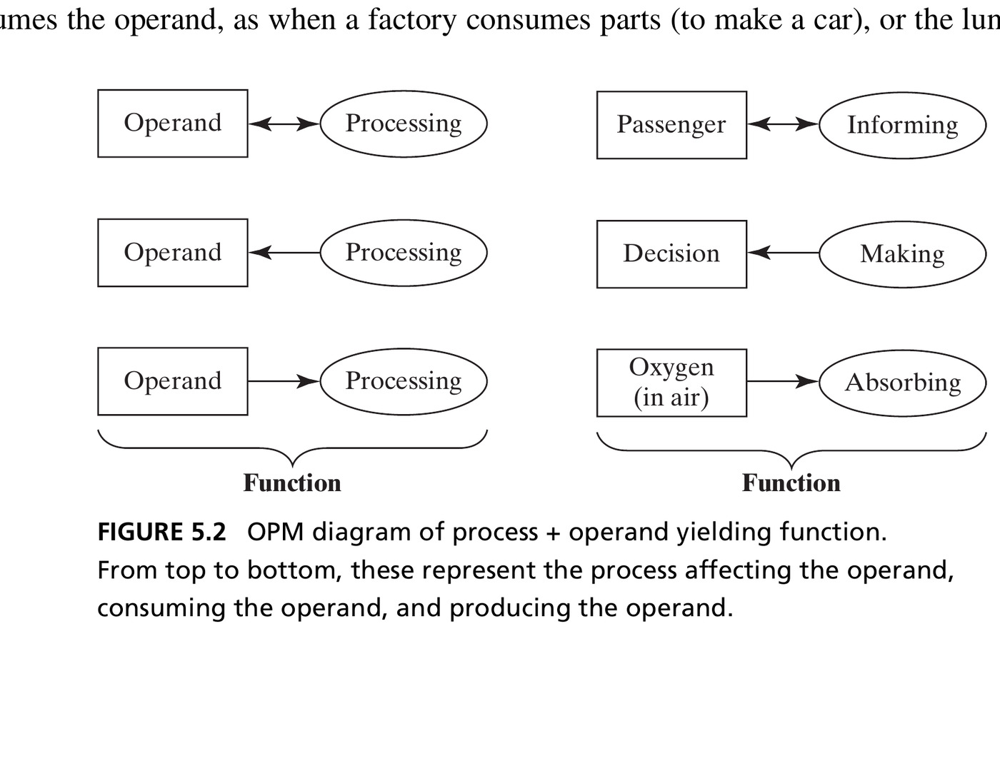
Figure 5.3 · The Canonical Model
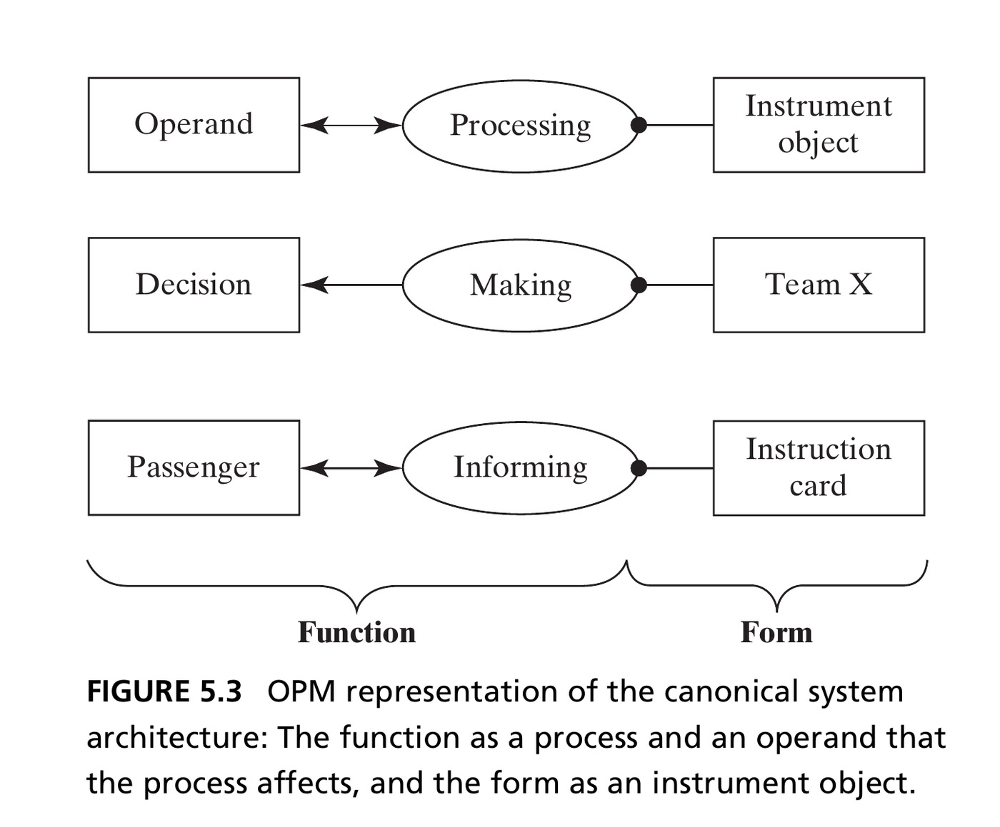
Function is a process affecting an operand; form is the instrument object enabling the process. This single diagram is the seed of every architecture model in this course. Source: Crawley, Cameron & Selva (2016), Fig. 5.3.
Making States Explicit
- A more detailed OPM view shows the operand’s states directly, and which state the process moves it from and to
- This is often the most useful representation: it shows exactly what “changes” means for a given operand
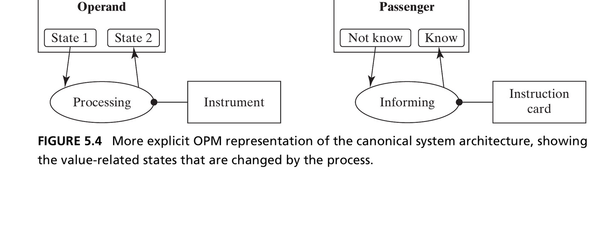
5.3 External Function and Value
Table 5.1 · Questions for Defining Function
| Question | Produces |
|---|---|
| 5a. What is the primary externally delivered function? What is value? | The value-related operand, its state, and the process that changes it |
| 5b. What are the internal functions? | The internal processes and operands |
| 5c. What is the functional architecture? | The functional interactions among internal processes |
| 5d. What are secondary value-related functions? | Additional operands and processes delivering value |
The Primary Externally Delivered Function
- The primary externally delivered function emerges when a process acts across the system boundary, at an interface
- The value-related operand is the one whose change in state is the reason the system exists
- To find it, ask: What is the most specific operand the system acts on to deliver value? What attribute and state change is associated with that value? What process changes it?
Pump primary function
Pump: operand is water, attribute is pressure, value-state is high, process is pressurizing.
Figure 5.7 · Increasing Levels of Detail
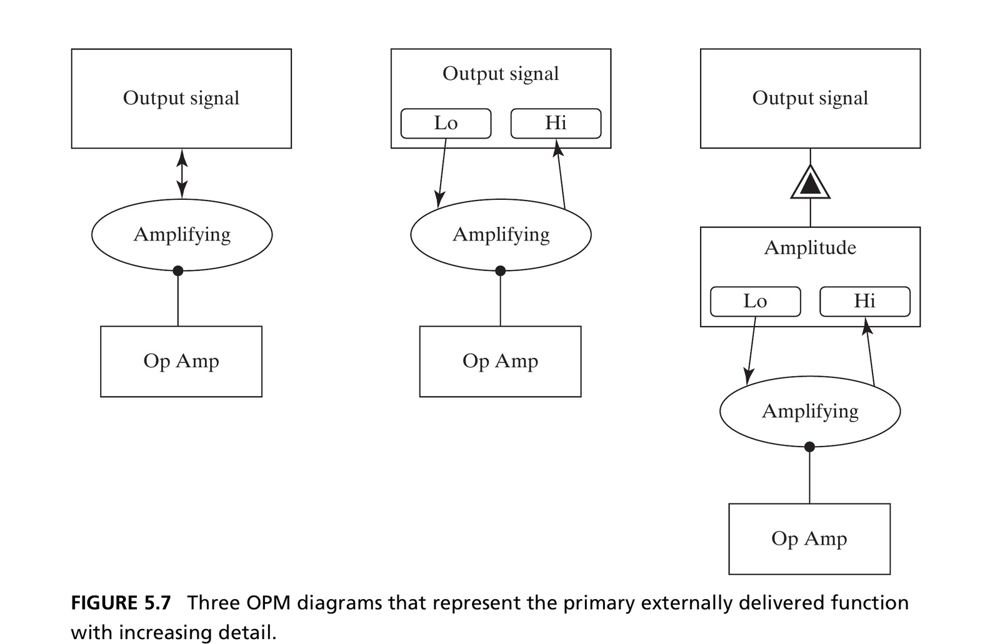
Three equally valid OPM diagrams of the same external function — increasingly explicit about the operand’s states. Source: Crawley, Cameron & Selva (2016), Fig. 5.7.
Figure 5.9 · The Pump’s Value-Related Operand
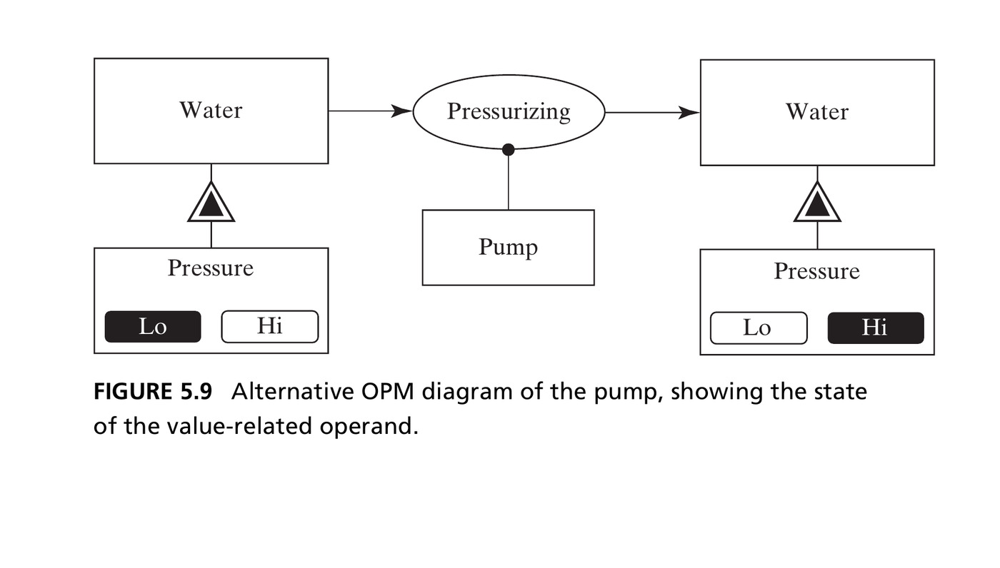
Water is the operand; pressure is the value-related attribute; pressurizing is the process that moves it from Lo to Hi. Source: Crawley, Cameron & Selva (2016), Fig. 5.9.
Box 5.4–5.5 · Value and Benefit
Value is the benefit received relative to the cost incurred.
Form, function, and value
“Design is not just what it looks like and feels like. Design is how it works.” — Steve Jobs
“Form and function should be one, joined in a spiritual union.” — Frank Lloyd Wright
Value = benefit at cost. Architecture is function enabled by form. Good architectures (desired function for minimal form) are nearly synonymous with the delivery of value.
Section 5.2–5.3 Summary
- Function is a process acting on an operand, enabled by an instrument of form
- The primary externally delivered function emerges when a process acts on the value-related operand across the system boundary
- Benefit materializes as a consequence of a process acting on the value-related operand — analyze the operand, its value-related attribute and state change, and the process
5.4 Internal Function
Identifying Internal Functions
- Internal functions are the processes and operands inside the boundary that lead to the value-related external function
- No shortcut exists — this requires domain knowledge: reverse-engineering the elements of form, applying standard blueprints for your field, or using metaphors
- The three techniques from Chapter 2 for predicting emergence apply here too: precedent, experiments, and analysis
Pump internal functions
Pump: increments kinetic energy (accelerating), then trades it for pressure (diffusing) — in addition to inflowing and outflowing.
Figure 5.10 · Internal Functions of Bread Slicing
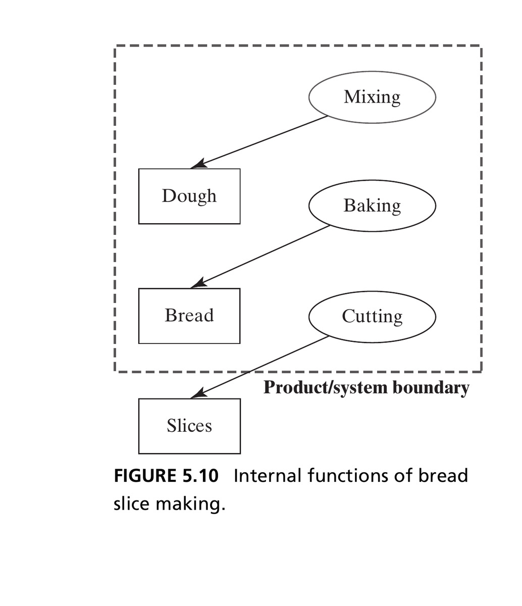
Mixing produces dough, baking produces bread, cutting produces slices — inferred from a standard cooking blueprint. Source: Crawley, Cameron & Selva (2016), Fig. 5.10.
Figure 5.11 · Internal Functions of Bubblesort
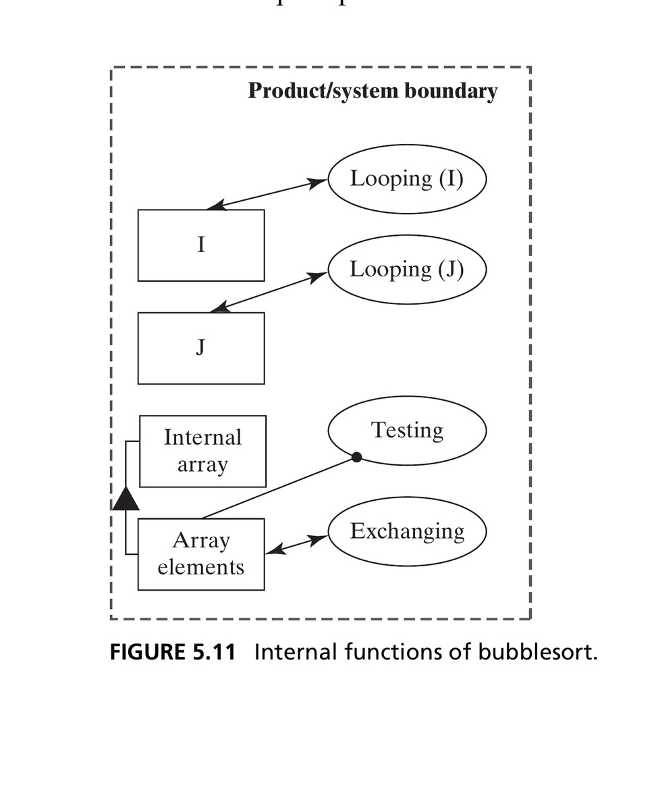
Looping affects the index (doesn’t create/destroy it); exchanging affects array entries; testing uses array elements as an instrument, without changing them. Source: Crawley, Cameron & Selva (2016), Fig. 5.11.
5.5 Functional Interactions
Functional Architecture
Functional architecture
The exchanged or shared operands are the functional interactions. The functions plus the functional interactions are the functional architecture.
- This is the key step in analyzing architecture: it’s through the interaction of internal functions that the externally delivered function emerges
- Comparing the internal-function view to the functional-architecture view usually reveals additional input/output operands that were implicit before
Figure 5.12 · Functional Architecture of Bread Slicing
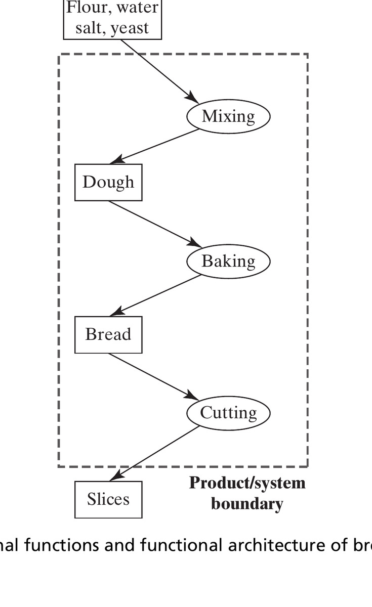
Adding the raw-ingredient input reveals the full functional architecture — compare to Figure 5.10. Source: Crawley, Cameron & Selva (2016), Fig. 5.12.
Figure 5.14 · The Pump, Redrawn with States
- Figure 5.13 (not shown) makes the pump look like a simple flow-through system — but water isn’t really destroyed and recreated at each stage
- Figure 5.14 captures what’s really happening: the state of the water changes as it moves through the system
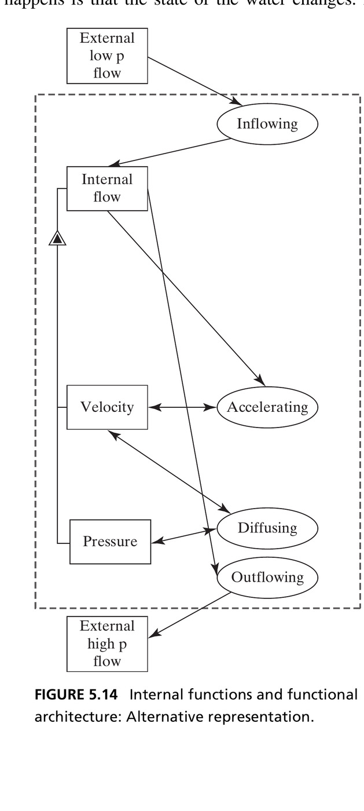
Choose the view that explains emergence
The interpretation of internal functions is never unique — the real test is whether it makes emergence easy to understand and predict.
The Value Pathway
- The value pathway is the chain of internal processes and operands that leads to the primary externally delivered function
- Not every operand and process is on it — some are:
- Not contributing to any desired function (unwanted side-effects, poor design, legacy — a source of gratuitous complexity, Ch. 13)
- Supporting processes and form (even further from the value pathway — Ch. 6)
Figure 5.15 · Entities Not on the Value Pathway
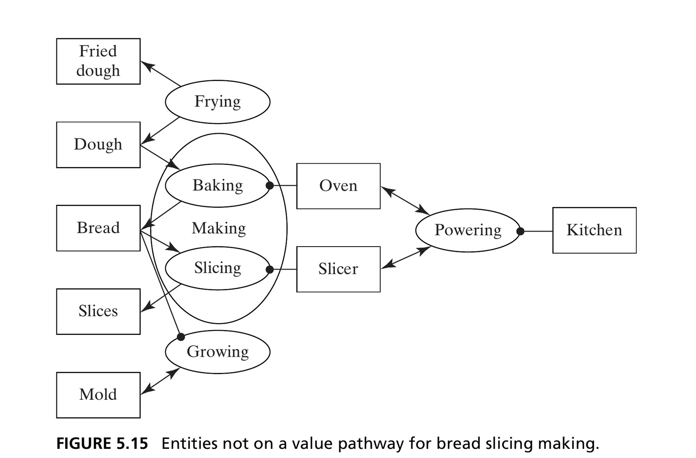
Frying belongs to a secondary value pathway; growing mold is unwanted. Powering (the kitchen) is a supporting function, one step further removed. Source: Crawley, Cameron & Selva (2016), Fig. 5.15.
Emergence and Zooming
- Emergence: the “smaller to larger” whole-part relationship for process — internal processes combine into the emergent external function
- Zooming: the reverse, “larger to smaller” — reasoning from the emergent function back down into the internal processes that produce it
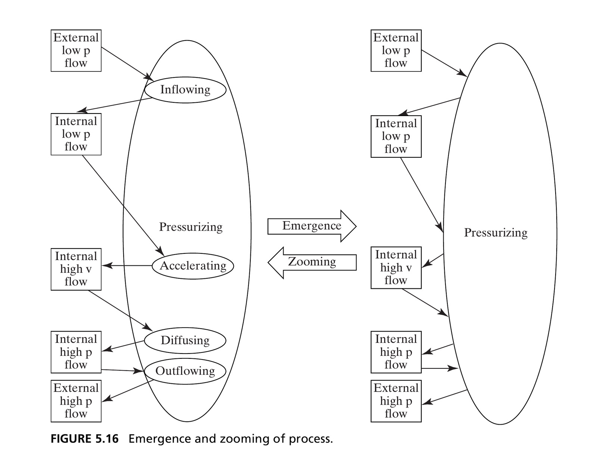
Functional Architecture in Software
- Software functions are of two types: computational statements (
A = B + C) and functions that dynamically allocate control (if... then...) - Control functions need operands too — control tokens, more implicit than explicit data variables
- This produces two parallel kinds of functional interaction: data interactions and command (control) interactions
Figure 5.19 · Bubblesort with Command Operands
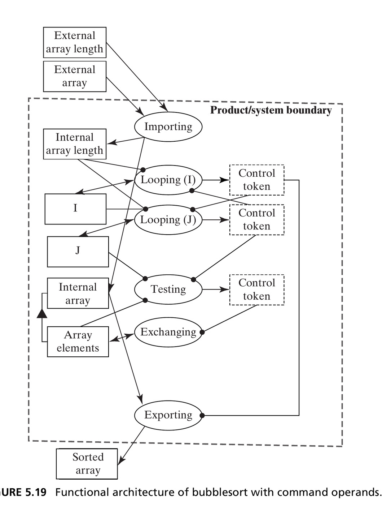
Control tokens pass between Looping, Testing, and Exporting — the command interactions running in parallel with the data interactions. Source: Crawley, Cameron & Selva (2016), Fig. 5.19.
Section 5.5 Summary
- The entities of internal function, the internal processes, and the interactions of operands among processes establish the functional architecture
- Representation of internal function is not unique — it depends on interpretation and style
- The functional architecture generally contains a value pathway; we zoom the external function to identify it
- Diagrams can be simplified using projections, where interactions between processes are indicated by shared operands alone
5.6 Secondary Functions
Secondary Value-Related Functions
- Once a system delivers its primary function, there’s no reason it shouldn’t deliver other value-related functions too
- Team X could also produce reports; the circulatory system also returns CO₂; an op-amp could also filter noise
- These matter: customers expect them, and they’re a source of competitive advantage
- Procedure: repeat the same reasoning used for the primary value-related function
Figure 5.20 · Secondary Functions of the Pump
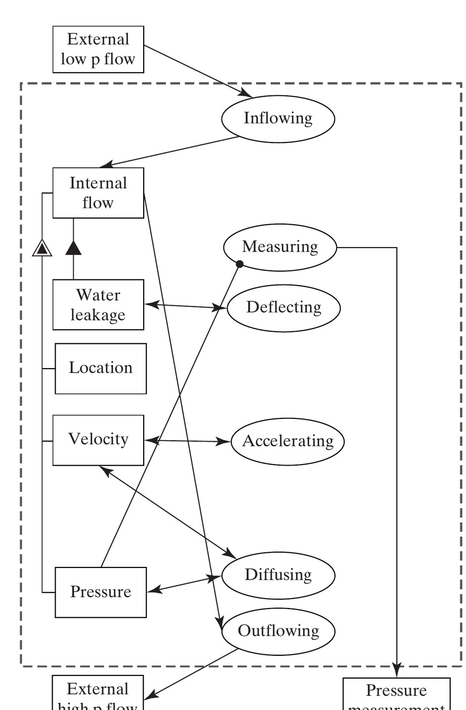
A “slinger” deflects leaked water away from the motor; a sensor measures outlet pressure. Neither is on the primary value pathway, but both add real value. Source: Crawley, Cameron & Selva (2016), Fig. 5.20.
Chapter 5 Summary
- Function is a process (enabled by an instrument of form) acting on an operand
- The primary externally delivered function emerges where a process crosses the system boundary and changes the value-related operand
- Internal functions require domain knowledge to identify; their interactions (shared/exchanged operands) form the functional architecture
- The value pathway is what predicts emergence — other entities may belong to secondary value pathways, provide support, or contribute gratuitous complexity
- Systems can deliver secondary value-related functions too, beyond the primary one
Next: System Architecture
Chapter 6 combines form and function: the mapping of instrument objects to internal processes is the architecture of a system.
Reference
Crawley, E., Cameron, B., & Selva, D. (2016). System Architecture: Strategy and Product Development for Complex Systems. Pearson. Chapter 5.

← Course Home · Systems Architecture · Chapter 5